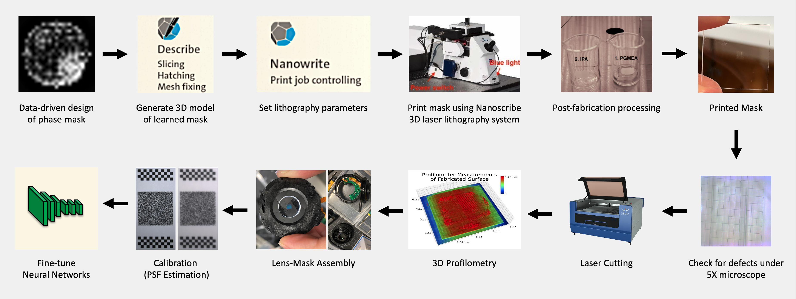
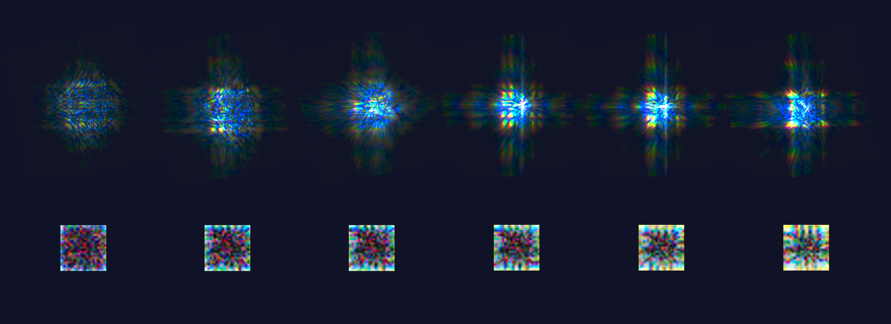
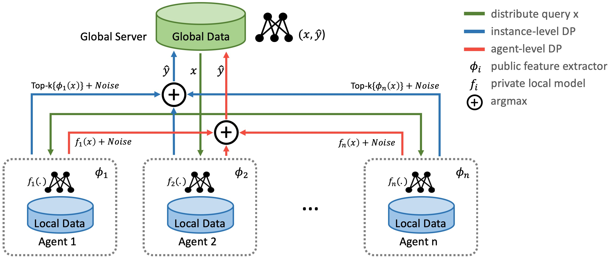

NEC Open House 2020
Privacy Protection for AI Models and Sensors
ABSTRACT: AI models for applications such as surveillance, healthcare, finance and retail require collecting and analyzing sensitive data. Deploying AI solutions, thus, requires assuring customers that private information is not leaked and legal regulations are followed. We present two ways to provide such an assurance. First, we develop privacy-aware sensors that acquire data in sensitive applications like hospital or smart home monitoring. Our sensors guarantee that high accuracy is achieved for tasks like behavior analysis, while personally identifiable information such as faces or bodies is hidden. Second, we develop methods that allow training of AI models, while guaranteeing that private information is not leaked. For example, we can train AI for medical diagnosis without leaking patient health records.
Privacy-Aware Sensing
Privacy-aware sensing prevents snooping attacks by never recording any sensitive information. We benchmark our privacy-aware sensing against companies that manufacture cameras or lenses, which seek privacy through hand-designed filters that sacrifice accuracy. Other companies that provide smart home or surveillance solutions achieve high accuracy, but sacrifice privacy since they work with standard images. In contrast, our sensors are designed to achieve both high accuracy and high privacy. Our privacy-aware sensing develops phase masks that are inserted in the camera to suppress private information, while achieving high accuracy on a given task. The design of the mask and a deep network for the task are trained together, along with an adversarial network to suppress private information. We demonstrate this for action recognition and depth estimation as two tasks, while face information is obfuscated to protect PII. In each case, we observe that our learned optics can achieve even higher task accuracy than standard cameras, while ensuring that face information is suppressed.
Pipeline for Fabricating Learned Optical Elements
Our roadmap for privacy-aware sensing will first develop a camera prototype and then manufacture a sensor. These will be used to define privacy standards in surveillance applications and open up new markets for smart home and hospital monitoring without leaking PII.
Simulated vs Actual Point-Spread-Function at Various Depths
Privacy-Aware Depth Estimation
Using our framework, we learn a phase mask design that (a) optically filters out facial ID information to inhibit face recognition and (b) optically encodes depth information to facilitate state-of-the-art performance on deep learning-based monocular depth estimation. Hover over the buttons to compare the results under different privacy-utility trade-offs. Note, that our approach provides great depth estimates across all settings.
Privacy Level (1=Lowest, 4=Highest): Utility Level (1=Lowest, 4=Highest):


Scene
Private Image from Our Sensor
Depth from Private Image
Ground-Truth Depth
Privacy-Aware AI Models
We develop two types of technologies for privacy-aware AI models: differential privacy and differentially private federated Learning. These technologies prevent attackers from using model outputs to decipher data, either in stand-alone training or in combined training across multiple stakeholders. Furthermore, Our privacy-aware AI models achieve high privacy and accuracy, with less data required compared to competitors. For example, Google needs much larger data than us, so cannot achieve high accuracy when customer data is limited. Other approaches such as federated learning used by Apple achieve accuracy, but do not provide a provable guarantee of privacy. As such, our models are suitable for a range of applications such as surveillance with face and human data, as well as finance with data from multiple banks. It can allow NEC to become a sole vendor at airports by securely aggregating information across multiple agencies such as airlines, security and retail.
Differential Privacy
Our differential privacy method provides customers a provable guarantee of privacy, against all types of attacks and for all types of data. Prior methods from Google achieve privacy by splitting the private data and training an ensemble of teacher models to guide the deployed model, which needs a large amount of data. Our method relies on privacy amplification by sub-sampling to achieve higher accuracy and privacy, with orders of magnitude less data. On same datasets, our method can achieve 90% higher privacy than Google in stand-alone training. In federated training, our differential privacy method can achieve 20% higher accuracy and up to 5 times better privacy than previous works.
Privacy Leakage for Differential Privacy
In this demo, we compare the performance of five models trained using our DP method to meet five different privacy requirements. We demonstrate that each model not only achieves its target privacy requirement, but also practical utility for facial attribute classification (i.e. smile, with beard, male, etc.).
Privacy Cost: Utility (Attribute Accuracy %):Model Utility vs Privacy Cost
Set of Private Images Compromised (Leaked) by Attack


Differentially Private Federated Learning
While federated learning (FL) enables distributed agents to collaboratively train a centralized model without sharing data with each other, it fails to protect users against inference attacks that mine private information from the centralized model. Thus, facilitating federated learning methods with differential privacy (DPFL) becomes attractive. Existing algorithms based on privately aggregating clipped gradients require many rounds of communication, which may not converge, and cannot scale up to large-capacity models due to explicit dimension-dependence in its added noise. In this paper, we adopt the knowledge transfer model of private learning, namely the PATE approach, as well as the recent alternative PrivateKNN to the federated learning setting. The key difference is that our method privately aggregates the labels from the agents in a voting scheme, instead of aggregating the gradients, hence avoiding the dimension dependence and achieving significant savings in communication cost. Theoretically, we show that when the margins of the voting scores are large, the agents enjoy exponentially higher accuracy and stronger (data-dependent) differential privacy guarantees on both agent-level and instance-level. Extensive experiments show that our approach significantly improves the privacy-utility trade-off over the current state-of-the-art in DPFL.
Approach Overview
Experimental Results
We validate the efficacy of our approach by comparing our approach to state-of-the-art methods for DPFL over two datasets: DomainNet and Office-Caltech.
Evaluation on DomainNet dataset.
Evaluation on Office-Caltech dataset.